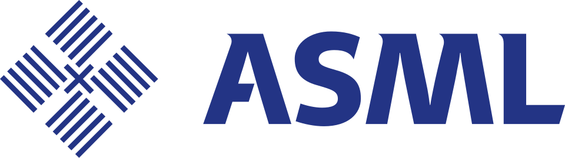

ASML Holding
ASML(ASML Holding)은 반도체 제조용 광학 노광 공정 장치를 만드는 네덜란드 다국적 기업이다. 집적회로 패턴 형성 장비를 공급하며 극자외선 노광 장치를 독점하는 것으로 알려진 기업이다.
최종 업데이트

ASML Holding는 어떤 브랜드인가
ASML은 집적회로의 패턴을 실리콘 웨이퍼에 형성하는 광학 노광 장비를 생산한다. 장비는 광학적 이미징으로 감광 물질이 코팅된 웨이퍼에 패턴을 만들며, 이 절차는 한 장의 웨이퍼에서 수십 번 반복한다.
Veldhoven에 본사를 두고 반도체 제조 공정의 핵심 단계에 쓰이는 장비 사업을 전개한다. 2010년 집계에서 반도체 리소그래피 공정 장치 점유율 67%를 기록했으며 캐논과 니콘이 경쟁사이다.
특히 기술적 난점이 많은 EUV 노광 장치 개발에 성공해 경쟁사와의 기술 격차를 넓혔다. 이 성과를 바탕으로 대표적인 반도체 제조 장치 업체로 평가되며 어플라이드 머티어리얼즈의 시가총액을 추월했다.
ASML Holding는 어떻게 시작되고 성장했나
ASM International과 Philips가 1984년 반도체 제조장비 합작회사로 설립했다. 두 회사 가운데 ASM International은 Philips에서 분사한 반도체 제조장비 기업이었다.
사명 ASML은 ‘ASM Lithography’의 약어에서 유래했으며, 회사는 1988년 독립했지만 Philips가 일부 지분을 계속 보유했다. 2012년 Intel은 EUV 공정 개발을 위해 지분 15%를 인수하며 41억달러를 투자했고, TSMC와 삼성전자도 비슷한 이유로 지분을 투자했다.
이후 EUV 장비 개발과 출하를 이어가며 2017년 한 해 12대를 출하했다.
ASML Holding의 브랜드 아이덴티티는 무엇인가
광학 노광 장비 시장에서 EUV 장치를 독점하고, 기술적 난점이 큰 공정을 상용 장비로 공급한다는 점이 다른 제조장비 기업과 구분되는 지점이다.
ASML Holding의 대표 제품과 서비스는 무엇인가
대표 사업은 감광 물질이 코팅된 실리콘 웨이퍼에 광학적 이미징으로 패턴을 만드는 포토리소그래피 장비이다. 이 장비는 집적회로 패턴을 그리는 데 사용하며, 한 장의 웨이퍼에서 같은 절차를 수십 번 반복한다.
제품군 가운데 기술적 난점이 큰 극자외선 노광 장치는 ASML이 독점하는 분야이다. 회사는 EUV 장비를 상용 출하했으며 2017년 한 해 12대를 출하했다.
이러한 장비 사업은 반도체 리소그래피 공정 장치 시장에서 2010년 67% 점유율을 기록했다.
ASML Holding는 지금 어떤 상태인가
ASML은 EUV 노광 장치를 독점하는 기업으로 알려져 있으며 Veldhoven에 본사를 둔다. 1988년 독립한 뒤에도 Philips가 일부 지분을 보유한 구조였다.
2012년 Intel이 지분 15%를 인수했고 TSMC와 삼성전자도 EUV 공정 개발을 이유로 지분을 투자했다. 2019년 중국 수출 제한 보도에 대해 회사는 미국 정부의 차단이 아니라 네덜란드 정부의 수출허가를 기다리는 상황이라고 답변했다.
ASML Holding 로고는 어떻게 변해왔나
자주 묻는 질문
ASML Holding는 어느 나라 브랜드인가요?
ASML Holding는 네덜란드의 기술·전자 브랜드입니다.
ASML Holding는 언제 설립되었나요?
ASML Holding는 1984년 설립되었습니다.
ASML Holding의 브랜드 아이덴티티는 무엇인가요?
광학 노광 장비 시장에서 EUV 장치를 독점하고, 기술적 난점이 큰 공정을 상용 장비로 공급한다는 점이 다른 제조장비 기업과 구분되는 지점이다.
ASML Holding의 대표 제품은 무엇인가요?
대표 사업은 감광 물질이 코팅된 실리콘 웨이퍼에 광학적 이미징으로 패턴을 만드는 포토리소그래피 장비이다.
ASML Holding는 현재 어떤 상태인가요?
ASML은 EUV 노광 장치를 독점하는 기업으로 알려져 있으며 Veldhoven에 본사를 둔다.
ASML Holding의 창업자는 누구인가요?
ASML Holding의 창업자는 ASM International, 필립스입니다(위키데이터 기준).
ASML Holding의 본사는 어디에 있나요?
ASML Holding의 본사는 Veldhoven에 있습니다(위키데이터 기준).
출처와 검증
ASML Holding 관련 참고: 공식 웹사이트 · 위키데이터 Q297879 · 한국어 위키백과 · 영어 위키백과. 브랜드명은 한글과 원어를 함께 표기하되 데이터에 없는 표기는 만들지 않습니다. 기원 국가·설립연도는 검수된 정의문에서 확인된 값을 우선하고, 없을 때만 공식 웹사이트 URL이 일치하는 위키데이터 개체의 값을 씁니다. 위키데이터 값은 2026-09-12 기준입니다.